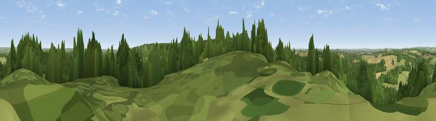

Viewpoint near Milford
#34008 in England · top 50% of its area beats it · near MilfordWhere it is
The exact computed spot (SJ 98075 21075). Click the marker for map links.
The view, rendered

A 360° render of this exact spot computed from the terrain model, tree cover and land cover — summer colours, afternoon light, calibrated against photographs of famous viewpoints. Real trees, hedges and buildings will differ in detail.
The panorama
Grey silhouette: terrain skyline in each direction (720 bearings, Earth curvature and refraction included). Dashed green: skyline with trees (+15 m) and buildings (+8 m) as obstacles. Blue strip: how far the ground is visible on each bearing.
Where the view opens
Wedge length = distance to the farthest visible ground on that bearing (vegetation-aware). Rings at 10, 25 and 50 km.
What fills the view
55% woodland · 29% grassland · 13% cropland · 2% built-up · 1% water
Angular shares of the visible panorama (visual magnitude), not map area. Landscape diversity 0.48 (0–1 Shannon).
Key numbers
More beautiful places nearby
The staircase of upgrades: each row has a higher view potential than everything closer. Driving times are estimates from straight-line distance, calibrated against real road routing — check an actual route before setting out.
| Place | Direction | Drive | Score |
|---|---|---|---|
| Viewpoint near Milford | WSW · 1 km | ~2 min | 45.1 |
| Viewpoint near Bishton | ESE · 4 km | ~8 min | 51.7 |
| Stafford Castle | W · 8 km | ~16 min | 60.6 |
| Wimblebury Hill | SSE · 11 km | ~20 min | 60.9 |
| Viewpoint near Sheriffhales | WSW · 22 km | ~37 min | 63.6 |
| Viewpoint near Forton | W · 24 km | ~39 min | 63.8 |
| Viewpoint near Newport | W · 24 km | ~40 min | 66.4 |
| Viewpoint near Streetly | SSE · 25 km | ~40 min | 69.5 |
52.78725, -2.02998 · source: screening · position refined by local search. Computed location — check access rights before visiting.